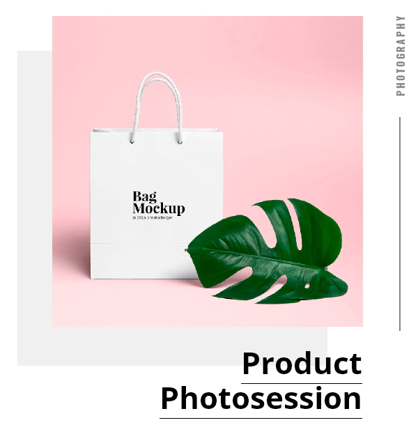
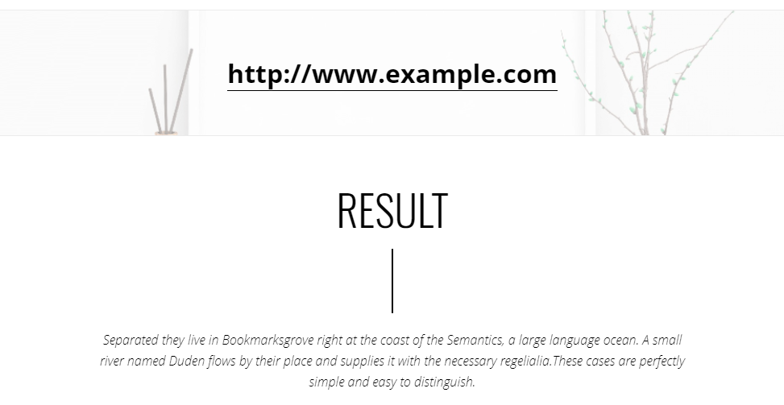
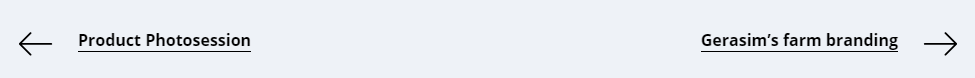

Slabb WordPress theme documentation
Personal portfolio theme
- created: 21/06/2018
- latest update: 21/06/2018
- by: GrawixThemes
- themeforest.net/user/grawixthemes
- email: grawixthemes@gmail.com
Thank you for purchasing our theme. If you have any questions that are beyond the scope of this help file, please feel free to email via my user page contact form here. Thanks so much!
About Theme
Slabb is the clean, simple, responsive & easy-to-use HTML5 WordPress theme based on Unyson and Bootstrap 3 frameworks.
This theme is perfect for people who want to quickly setup their own web-site and highlight the portfolio and professional advantages. It comes with personal blog and also includes working contact form which allows you to gather leads from your web-site easily.
Slabb is prepared for translation, it has .po files (for theme and plugin), so you can make translation using special software.
We recommend Poedit translator ( https://poedit.net/ )
Installation
Installation package includes zip-archive with the theme and this documentation.
After theme activation, you will see a notification to install and activate two plugins. They are necessary for correct operation of the theme.
If you don't see this notification for any reason, you can download plugins from here:
https://bitbucket.org/grawixthemes9/slabb-wp-plugin/get/8fa887544672.zip
https://github.com/ThemeFuse/Unyson/archive/master.zip
and install them manually.
After plugins installation, open Dashboard - > Unyson folder and check installed extensions. You will need four active extensions: Page Builder, Breadcrumbs, Backup & Demo Content, WordPress Shortcodes.
If some of them is missing, please install it manually ( press ‘Show other extensions’ button and download missing extension. )
Now you are ready to add content into your site
Theme settings
Settings section is located in Dashboard -> Appearance -> Theme Settings. You can setup your personal information, social links and placeholders for contact and comment forms.
Please pay attention to the correct format of Social Links fields.
Example:
Demo content installation
If you visit your web-site after theme and plugin installation, you will see only blogroll's markup, with default WordPress post. Now you have two ways to add content to your site: create all posts and pages by yourself (see chapters below) or install demo content. In this case your site will looks like our promotional demo: http://slabb-wp.themes.grawix.com/free. All that you will need is to replace sample text and placeholders by your own content.
To install demo content you can open Dashboard -> Tools -> Demo Content Install and click 'Install' button.
If after demo content installation you can't open any post ( 404 page display instead ), you need to reset pretty permalinks. Go to the Dashboard -> Settings ->Permalinks section -> Common Settings. Choose Plain permalinks and save changes. After that choose Post name permalinks and save changes again.
Page settings
Slabb theme hasn't special page templates. All pages can be created with default page template.
Each page has page settings section with 'Select header type' options.
These options are effect on top part of the page layout.
1. No header
No space between first section and top side of the screen.
Logo image and menu icon will be displayed over first section.
2. Empty header
Empty space between first section and top side of the screen.
3. Header with page title
Space between first section and top side of the screen with page title.
4. Header with page title and breadcrumbs
Space between first section and top side of the screen with page title and navigation menu - breadcrumbs.
Home page setup
Before creating Home page, add new empty page Portfolio. You can see the description of this page below.
Create a new page with title Home.
Press 'Visual Page Builder' button. You will see a lot of tabs with elements.
On this page you will need the Slabb Elements tab.
Below you will see seventeen elements (shortcodes) which you can use to construct your own pages.
Some of the elements, shown on this picture, present only in the Pro version of this theme.
The way it works:
Each element corresponds to the certain section of the page. You can decide on which elements to use and in what order.
Just click on element and drug'n'drop to reorder.
The exceptions are INTRO SECTION and FULL-WIDTH INTRO SECTION - if you use one of them, it must be on top of page.
To add / edit element content you need to click on gear icon. After finishing editing don't forget to click on Update button.

Lets consider all elements in recommended order.
1. INTRO SECTION
This is the first section with a big image, greeting text and action buttons.
Enter your own text and choose the image.
`View Portfolio` button link - choose Portfolio page
2. PROJECTS SECTION
This is the most important and complicated part of the content.
DESCRIPTION
In this section you can display your most significant projects. Each project is a part of your portfolio and represents your completed work what you want to show visitors.
In the Slabb theme the project is displayed on three different pages:
1. On the Home page in the Projects section
2. On the Portfolio page
3. On the Portfolio Details page
Before adding a Projects section to the Homepage, you have to create projects. Each project is a post with all information
about this project - date, client, description, images, etc.
Update your Homepage and create new posts Dashboard -> PROJECTS -> Add new Projects entry.
Now you need to add the title of the project and category and publish the post. Adding content to metaboxes will be described later.
After creating projects posts, you need to create a static page for each project.
Go to the Dashboard -> Pages and create new a page using Project Template 1 element. ( Project Template 2 and Project Template 3 elements present in Pro version only) .
These elements have different layouts. You can find the description in the next section of this manual
named Portfolio Details page
After that you have to open Project element editor and choose Project post which you want to display on this page.
Create pages for all projects in the same way.
Now you have to return to editing Home page -> Project element. You can enter title / description and add elements for this section. Elements can be of three types: Project / Quote / Facts block.
PROJECT
Clickable widget linked with project's page.
FACTS BLOCK
Block with text strings and portfolio page linked button.
QUOTE
Text block with quote and author.
Project elements have six different widget (containers) types. Each widget type has its own layout and style. You can use any type.
WIDGET TYPE 1
WIDGET TYPE 2
WIDGET TYPE 3
WIDGET TYPE 4
WIDGET TYPE 5
WIDGET FEATURED TYPE
4. SERVICES SECTION
This section shows your key advantages and has title, subtitle, facts block and icons. Before adding this section to the Homepage, you have to create services. Each service is a post with title and featured image.
Update your Homepage and add new posts Dashboard -> SERVICES -> Add new Services entry.
5. CTA SECTION
This is a small section with call-to-action button and text block.
6. TESTIMONIALS SECTION
This section displays testimonials and text block which is the section title. Testimonials should be created as posts in the Dashboard -> TESTIMONIALS folder.
7. CONTACTS SECTION
You can add the title, subtitle and title display mode. All other information for this section is indicates in Theme Settings.
Portfolio page
This is the page where you can display all your projects with category filter.
You have to create a new page
with Projects Grid element.

In the Projects Grid element you can select and arrange projects which you want to display.
CTA Section is the same looking element as you have on the Home page, but you can add different text here.
For correct displaying of Portfolio page you have to open each of your project posts in the editor ( Dashboard -> PROJECTS ) and fill in the PORTFOLIO WIDGET SETTINGS chapter.
Fields description:
1. Display in wide container ?
For the most important projects you can use rectangular images and display them in wide container. For other projects you can use square images.
2. Main image
Select image for project widget.
3. Additional images
If you select additional images, they will be displayed on mouse hover.
Portfolio Details page
The Slabb theme (free version) has one element for representing your project: Project Template 1.
All the content for these elements should be added into the corresponding project post metaboxes.
Below you will find description of each element.
PROJECT TEMPLATE 1
The sample: http:/free.slabb-wp.themes.grawix.com/coffee-co-branding/
This template has the folloing sections:
TITLE
STORY SECTION
DEVELOPMENT PROCESS SECTION
IMAGES GALLERY SECTION
RESULTS SECTION
NAVIGATION SECTION
About page
This page displays your personal description, photo and link to your blog.
Create new page and add About element.
.
Contacts page
This page displays your contacts information - email, socilal links and contact form.
Create new page and add Contacts element.
Blog
If you want to add blog to your site just create new page with name 'Blog' and slug 'blog'.
After that set this page as Posts page ( Dashboard -> Settings -> Reading )
When you add or edit the post, please pay attention to the new icon in the wp-editor panel.
This icon allows you to add two custom shortcodes into your post text: 'Animated Image' and 'Quote'.
Slabb theme supports four sidebars: Right, Category, Recent posts and Tags.
Right sidebar is an area for any WordPress widgets.
If you want to use styled Category, Tags or Recent posts widget ( as on the demo site), you have to place it to the appropriate Category / Tags / Recent posts sidebar.
Customization
Some settings of the theme are available in the WordPress Customizer.
You can find it here: Dasboard -> Appearance -> Customize.
In the Site Identity section you can adjust logo and icon images.
In the Header Media section you can add / change image or video for the Full-width Intro section.
In the Menus section you can setup main menu.
In the Theme color settings section you can adjust color of different elements and fonts.
JavaScript Plugins Used
Here's a list of the javascript plugins and libraries used in this theme
| Plugin | Filename | Description |
| Bootstrap 3 | libs/bootstrap.min.js | A sleek, intuitive, and powerful front-end framework for faster and easier web development. |
| jQuery | embedded | A fast, small, and feature-rich JavaScript library. It makes things like HTML document traversal and manipulation, event handling, animation, and Ajax much simpler with an easy-to-use API that works across a multitude of browsers. |
| Masonry | libs/masonry.pkgd.min.js | JavaScript grid layout library. It works by placing elements in optimal position based on available vertical space, sort of like a mason fitting stones in a wall. |
| imagesLoaded | libs/imagesloaded.pkgd.min.js | Detect when images have been loaded. |
| Magnific Popup | libs/jquery.magnific-popup.min.js | Fast, light and responsive lightbox plugin, for jQuery and Zepto.js. |
| jQuery Validation | libs/jquery.validate.min.js | This jQuery plugin makes simple clientside form validation easy, whilst still offering plenty of customization options. |
| BigText | libs/bigtext.js | This jQuery plugin takes a single element and sizes the text inside of its child elements to fit the width of the parent element. Gives the text that lovely vertical alignment. |
| Jarallax | An open-source javascript library which makes adjusting css based on interaction easy. With Jarallax it's easy to create a parallax scrolling website. | libs/jarallax.min.js |
| Waypoints | libs/jquery.waypoints.min.js | Waypoints is a library that makes it easy to execute a function whenever you scroll to an element. |
| Smooth Scroll | libs/smoothscroll.js | Smooth scrolling experience for websites. |
| Isotope | libs/isotope.pkgd.min.js | Plugin for filtering layouts. Commercial licensed version is used. |
Credits Files Some of our credits and sources
We've used the following images, icons or other files as listed.
JavaScript & CSS
- jQuery
- Bootstrap 3
- Masonry
- imagesLoaded
- Magnific Popup
- jQuery Validation Plugin
- BigText
- Jarallax
- Animate.css
- Font Awesome
- Waypoints
- Smooth Scroll
- Isotope
Images
Note: Images you may have seen in the live preview are not included in the final item purchase.
Once again, thank you so much for purchasing this item. As we said at the beginning, we'd be glad to help you if you have any questions relating to this item. If you have a more general question relating to the themes on ThemeForest, you might consider visiting the forums and asking your question in the "Item Discussion" section.
Our profile page - https://themeforest.net/user/grawixthemes